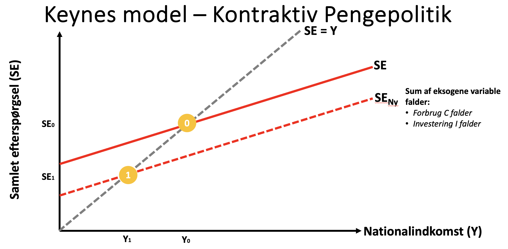
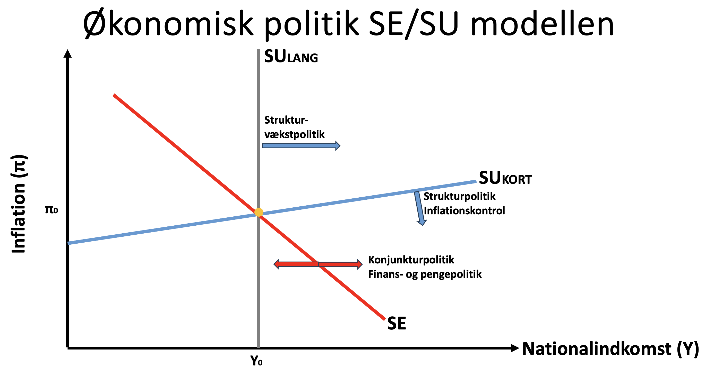

Formål: Kommenter kort på nedenstående figur. 
Kontraktiv pengepolitik er en økonomisk strategi, der anvendes til at mindske den samlede efterspørgsel i en økonomi.
Denne politik implementeres typisk ved at hæve renten. Når renten stiger, bliver det dyrere for virksomheder og forbrugere at låne penge.
Som en konsekvens heraf falder investeringer (I), da virksomheder udskyder eller reducerer deres investeringsplaner. Samtidig falder forbruget (C), fordi husholdninger bliver mere tilbageholdende med at bruge penge, da det bliver dyrere at finansiere forbrugslån.
Den samlede effekt er, at efterspørgselskurven forskydes nedad, hvilket illustreres ved skiftet fra den oprindelige kurve (SE) til den nye kurve (SENy) på figuren.
Dette fører til et fald i nationalindkomsten (Y) fra et højere niveau (Y0) til et lavere niveau (Y1). Samlet set falder både nationalindkomsten og efterspørgslen i økonomien.
Formålet med kontraktiv pengepolitik er at dæmpe inflationen eller bremse en overophedning af økonomien. Ved at sænke den samlede efterspørgsel forsøger man at reducere det pres, der kan lede til prisstigninger.
Det er dog vigtigt at bemærke, at en kontraktiv pengepolitik også indebærer en risiko. Et for kraftigt indgreb kan føre til et fald i økonomisk vækst, der i værste fald kan resultere i recession.
Kommenter kort på nedenstående figur. 
Strukturpolitik omfatter en bred vifte af tiltag, der sigter mod at ændre de fundamentale strukturer i en økonomi med henblik på at øge produktiviteten, fremme vækst og forbedre den økonomiske effektivitet på lang sigt. Strukturpolitik virker hovedsageligt på udbudssiden (SU).
Et eksempel på strukturpolitik er reformer af arbejdsmarkedet. Dette kan omfatte at gøre det nemmere at ansætte og afskedige medarbejdere, at ændre dagpengesystemer, eller at gennemføre tiltag der øger arbejdsudbuddet. Målet er ofte at øge beskæftigelsen og produktiviteten.
Et andet eksempel er investeringer i uddannelse og forskning. Ved at øge niveauet af uddannelse og forskning, kan man fremme innovation og teknologisk udvikling, som kan øge den langsigtet produktivitet i økonomien. Disse investeringer styrker den strukturelle vækst i økonomien.
Skatte- og reguleringsreformer er også en vigtig del af strukturpolitikken. At sænke skatten på virksomheder eller reducere bureaukrati og reguleringer kan gøre det lettere at drive virksomhed, tiltrække investeringer og stimulere væksten. Formålet er at skabe et mere effektivt og dynamisk erhvervsliv.
Privatisering af offentlige virksomheder kan føre til effektivitetsgevinster og konkurrence, der kan styrke økonomien. Ved at overdrage statsejede virksomheder til private aktører skaber man incitament til at reducere omkostningerne og forbedre kvaliteten, hvilket øger produktiviteten.
Endelig kan man gennemføre strukturpolitik, der har til formål at fremme konkurrence i forskellige sektorer. Dette kan gøres ved at fjerne barrierer for nye virksomheder eller ved at sikre fri adgang til vigtig infrastruktur. Når der er mere konkurrence presses virksomhederne til at innovere og tilbyde bedre priser, hvilket styrker forbrugerne og øger den økonomiske effektivitet.
Aktivitet Temaprojekt 2 uge 2
Løsningsforslag
USA og Euro-zonen
Henrik Grell og Elsebeth Rygner
Mikroøkonomi - teori og beskrivelse
Hans Reitzel, 6. udg., 2022
Kapitel 1 til 6
1. Introduktion til makroøkonomien
2. Det økonomiske kredsløb
3. Konjunkturbeskrivelse
4. Betalingsbalance og valutamarked
5. Penge og finansielle markeder
6. Rentedannelsen
7. Varemarkedet på kort sigt
8. Konjunkturpolitik
9. Arbejdsmarkedet i makroøkonomien
10. Konkurrenceevne og globalisering
11. Inflation og produktion
12. Økonomisk politik
At forstå hvordan makroøkonomien fungerer
Anslået tidsforbrug:
5 timer
Forudsætning:
Makroøkonomi - teori og beskrivelse Kapitel 1 til 6
Opgave:
Besvar spørgsmålene, upload i Workshop inden deadline.
Her kan du se undervisers løsningsforslag og sammenligne med din egen opgave, din sammenligning er til dit
eget brug.
Feedback:
Feedfruits
Bemærk Workshop opgaven er ikke obligatorisk.
Oplysninger
Økonomiske nøgletal (prognoser) for Euro-området og USA (2025)
Økonomisk nøgletal
Euro-området
USA
Private forbrug, realvækst pct.
0,7
2,5
Offentligt forbrug, realvækst pct.
0,6
0,9
Eksport, realvækst pct.
1,0
2,2
BNP, realvækst pct.
0,8
2,5
Inflation, pct.
2,1
2,4
Ledighedsprocent, andel af arbejdsstyrke
6,5
4,2
Offentlig gæld, pct. af BNP
94
125
Centralbankens rente, pct.
1,75
3,25-3,5
Kilder:
Spørgsmål 1
Løsningsforslag:
Hvis inflationen stiger yderligere, bør Fed hæve renten for at mindske den samlede efterspørgsel i økonomien.
De kunne også overveje at reducere deres balance ved at sælge statsobligationer for at trække likviditet ud af markedet og mindske pengemængden. Når en centralbank reducerer sin balance ved at sælge statsobligationer for at trække likviditet ud af markedet og mindske pengemængden, er kvantitativ stramning eller quantitative tightening.
Løsningsforslag:
EU-landene står over for udfordringen med at balancere behovet for økonomisk vækst med nødvendigheden af at styre den offentlige gæld.
En kombination af stimulanspakker og investeringer i bæredygtig infrastruktur kan være nødvendig for at øge efterspørgslen og fremme vækst. Det er dog vigtigt at sikre, at udgifterne er målrettede og understøtter langsigtede mål.
Løsningsforslag:
Med lav ledighed og høj inflation bør USA's finanspolitik være mere stram, hvor man reducerer offentlige udgifter eller indfører skattestramninger.
Dette for at hjælpe med at dæmpe efterspørgslen og reducere inflationen.
En stram finanspolitik kan understøtte pengepolitikkens indsats mod inflation, mens et stærkt arbejdsmarked kan klare en vis afkøling af økonomien.
Løsningsforslag:
EU kunne fokusere på at fremme et mere fleksibelt arbejdsmarked ved at fjerne bureaukrati og gøre det lettere at ansætte og afskedige medarbejdere.
Samtidig kan investeringer i uddannelse og forskning øge produktiviteten og fremme innovation.
Det kan også give EU en stærkere økonomi at reducere afhængigheden af energiressourcer fra udlandet.
Løsningsforslag:
USA kan fortsætte med at investere i teknologi og innovation, især inden for grønne teknologier.
At forbedre uddannelsessystemet og gøre det mere tilgængeligt for alle, kan også være en investering, som vil betale sig på lang sigt.
En mere proaktiv politik overfor konkurrence og virksomhedsetablering kan også skabe en stærkere økonomi.
Løsningsforslag:
Hvis eksporten falder, kan EU-landene overveje at styrke den indenlandske efterspørgsel ved at øge offentlige investeringer i bæredygtig infrastruktur.
De kan også søge at fremme konkurrenceevnen ved at reducere bureaukrati og understøtte nye virksomheder, som måske kan eksportere i fremtiden.
Spørgsmål 2
Løsningsforslag:
Alternativt kan indføres kvantitative stramninger i form af opkøb af obligationer, så der trækkes likviditet ud af markedet.
Spørgsmål 3
Løsningsforslag: